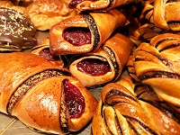
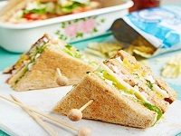

Ez egy iskola beadandó!
Friss pékség
A legjobb helyen a legjobb minőség! Keressen minket friss áruért!
Termékeink
Mindent a Gluténról!
A glutén (hivatalos szakkifejezéssel a sikér) két fehérje, a gliadin és a glutenin keveréke.
A búza, a rozs és az árpa magjainak endospermiumában találhatók a keményítővel együtt.
A gliadin és a glutenin a búzaszemek fehérjetartalmának kb. 80%-át teszi ki.
Mivel vízben nem oldódnak, tisztíthatóak a keményítő kimosásával.
Egyes emberek érzékenyek a gluténra (lisztérzékenység) és ezért nem fogyaszthatják.
Kézzel és szeretettel készült
|  |
|
|
 |
Specializáció:
Mindent speciális módón készítünk
el az egészség megőrzése
érdekében.
|
Felszolgálás:
A felszolgálás titka
a mosoly.
|
Szeretet:
A legfontosabb hozzávaló
a szeretet
|
Biztonság:
Minden falat
gluténmentes
|
Térj be hozzánk!
Hétfő-Vasárnap 8:00 - 20:00 között. Hívjon minket a 06-11-111-1111 -as számon.
Készítette: Hegedüs Zoltán Márk
E-mail: hegedus.zoltan.mark1996@gmail.com